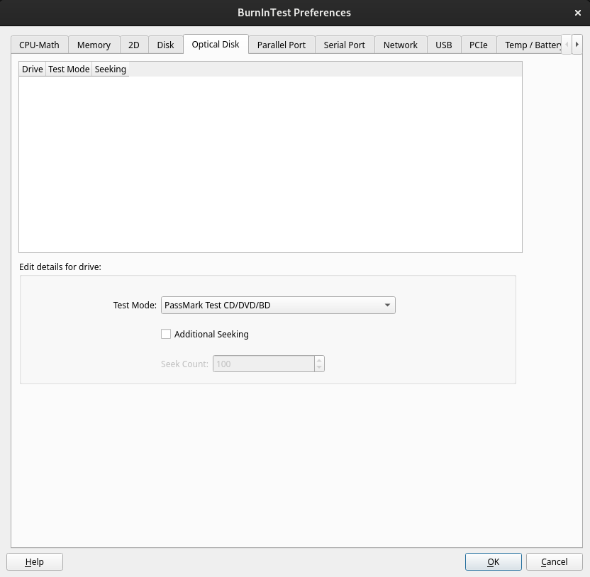

CD-ROM/DVD Preferences |
Top Previous Next |
|

CD/DVD Selection and test method These fields allow the user to select the CD and DVD drives to be used for the CD/DVD test.
Adding a CD/DVD drive To add a drive letter to the list of disks to be tested, select the drive letter from the drop down list, select the test mode and click on the "Add new CD/DVD to list" button. Only those CD and DVD drives detected by the operating system as displayed in the drop down list. Up to twenty drive letters can be selected for simultaneous testing. The CD burn test supports a maximum of 1 drive simultaneously. The type of CD used in the actual test should match the setting in this window. See the CD Test description (page, 9) for more details about test types.
Removing a CD/DVD drive To remove a disk from the list. Selection one or more drive letters (using CTRL / ALT while clicking) and then click on the "Remove selected CD/DVDs” button.
Additional seeking and Seek count For PassMark CD/DVD’s and Burn CD-RW only. When Additional seeking is selected, seeking to different positions on the CD/DVD or CD-RW will occur Seek Count number of times for each cycle of file read/verify.
|